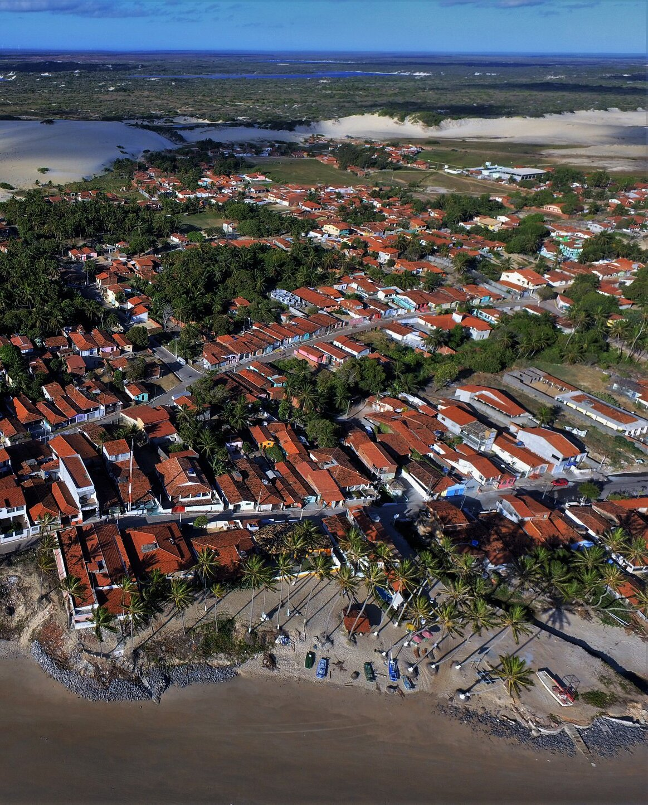
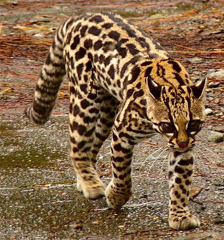

CONTEXTO: GEOGRAFIA E CULTURA
RIOS
Os povoamentos que se tornaram vilas e cidades no Rio Grande do Norte normalmente se formavam às margens de grandes rios ou lagoas, exemplo de Natal, às margens do rio Potengi; Extremoz, nas proximidades dos rios Doce e Guajiru, os quais formam uma lagoa; e Ceará-Mirim, à margem direita do rio de mesmo nome. As pequenas povoações do litoral ao norte do rio Ceará-Mirim também ocorrem da mesma forma: concentram-se nas proximidades de córregos de água doce. Touros, Maxaranguape e Rio do Fogo, hoje sedes de municípios, se formaram em torno de rios. Da mesma forma Zumbi, Pititinga, Maracajaú e a Praia de Caraúbas tiveram seus primeiros moradores situados bem próximos de pequenos córregos.
Em Maracajaú, foi às margens de um maceió que as primeiras famílias se instalaram. Esse rio teve maior fluxo de água no passado e é alimentado por duas fontes: uma na antiga Barrinha e outra próxima de onde é hoje a Unidade Básica de Saúde, no conjunto Vila Nova. O vale desse afluente foi o local preferido das famílias mais tradicionais de Maracajaú. Esse vale cruza o povoado desde o Vila Nova, passando por trás do terreno que pertenceu à Sra. Consuelo, pela Rua do Morro, por trás da igreja católica, até a ADCOM.
O maceió deságua ao lado de onde funcionou o restaurante Aquarium, da empresa Maracajaú Diver, área da União. Há ainda em Maracajaú outro pequeno riacho perene, chamado Rio da Praia, na direção noroeste, local que também é patrimônio da União. Ao longo das margens desse rio foram cultivados grandes sítios de coqueiros. Já o Riacho, é um córrego temporário das épocas de chuva. Em tempos de bom inverno, se estende desde a Lagoa do Baião até desembocar em Peracabu, próximo a Caraúbas. As lagoas perenes do Baião Grande e do Baiãozinho completam a riqueza e beleza hidrográfica que tornaram Maracajaú atrativa em tempos de seca.
O clima de Maracajaú, conforme o estudo da professora Goretti Varela Cavalcante (1985), é tropical chuvoso com verão seco, com chuvas que se iniciam nos meses de março a abril, e apresentando maior pluviosidade nos meses de junho e julho.
O GATO-MARACAJÁ
A origem do nome Maracajaú está ligada justamente ao maceió e à contribuição do dialeto tupi-guarani (nheengatu) na formação de nossa língua. Contribuição que se nota nos nomes de diversos lugares e regiões do litoral.
O dialeto tupi é rico em sílabas formadas com as vogais i e u, e notamos esse padrão em palavras como Muriú, Pititinga, Jacumã, Piracabu, Jenipabu, Pitangui, Caraúbas, Maxaranguape, dentre outras. Há também muitos nomes de frutos silvestres com o mesmo padrão, como caju, cambuim, murta, ubaia e batinga. Sem falar em outras categorias, como nomes de peixes ou outros animais, dos quais se poderia citar uma infinidade de palavras com origem na língua nativa indígena.
Segundo a tradição, num passado remoto, o maceió era frequentemente visitado por maracajás, que iam ali beber água. Essa espécie de felino selvagem era muito comum na região, uma vez que as matas eram bem mais densas. O gato-maracajá, também conhecido como gato-do-mato, é um felino de pequeno porte, maior que o gato doméstico e menor que a jaguatirica, muitas vezes se confundindo com essa espécie. Pode ser confundido também com um filhote de onça pintada. A espécie, embora praticamente extinta na região, tanto pela expansão do povoamento como pela caça, ainda pode ser encontrada em áreas de mata mais fechada e afastada dos centros povoados.
Câmara Cascudo, em seu livro Nomes da Terra, explica a formação do vocábulo Maracajaú como a união de maracaiá + u (rio), ou seja: rio dos maracajás em nheengatu. O argumento da origem do nome Maracajaú, nessa perspectiva, ganha força quando analisamos a formação de outros povoados vizinhos, que se originaram em torno de rios, e que os nomes desses rios também estão associados a alguma espécie animal. É o caso do rio Guaxinim em Pititinga e Punaú (rio das borboletas) em Zumbi.
A tradição também conta que passou pela praia um frade, sendo carregado por escravos numa padiola. Esse frade já havia passado em Rio Roxo e mudado seu nome para Rio do Fogo. Em Maracajaú, que antes se chamava apenas de Maracajá, ele perguntou qual era o nome do lugar. Ao lhe responderem, ele disse “u” e a sílaba foi acrescentada ao nome da praia. Se considerarmos que em 1816 já se faz referência ao lugar como Maracajaú, esse episódio, então, aconteceu antes dessa data.
O mesmo frade, ao chegar numa certa região da praia, sentiu sede e pediu para que cavassem o chão para tirar água. Disseram-lhe que a água era salgada, mas ele insistiu para que continuassem cavando e, afinal, a água era doce. Nessa ocasião ele também deu nome ao local, chamando-o de Santos Anéis. Existe mesmo próximo à Ponta dos Anéis um olheiro de água doce, considerado como um milagre daquele religioso. Voltando ao gato-maracajá, o felino foi caçado massivamente entre as décadas de 1960 e 1970, além da jaguatirica, a onça pintada e algumas espécies de cobra, dentre outros animais. O mercado de peles movimentou fortunas. A proibição da caça só veio em 1967, mas o contrabando permaneceu dizimando esses animais, como ainda ocorre. Como veremos adiante, em 1808 são usadas como referências para os limites da sesmaria, que originou Maracajaú, as praias de Santa Cruz, ao norte, e de Piracabu, ao sul. O termo “Maracajaú” só aparece em 1816, quando a sesmeira repete o pedido, uma vez que restava-lhe ter a confirmação régia e receber o título da terra.
O gato maracajá está, pois, diretamente relacionado ao nome da comunidade, cabendo-lhe devidamente menção e destaque.
(Livro História de Maracajaú, p. 21-25)